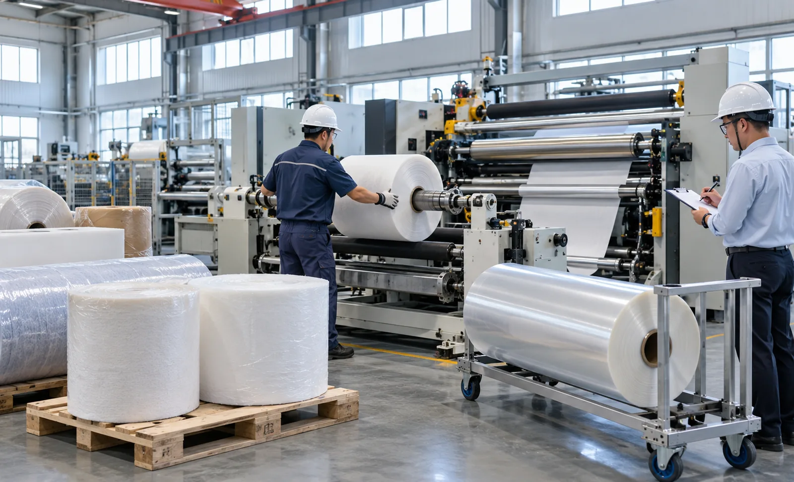
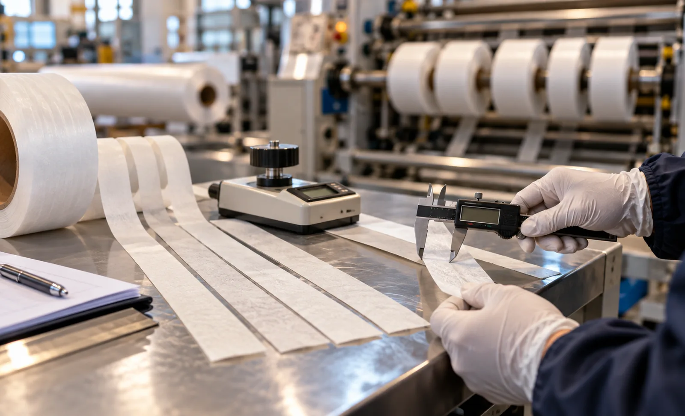

Published September 26, 2026 | By HDPTH Technical Editorial Team

Between the quotation and the purchase order sits the least glamorous and most valuable step in buying a slitter rewinder: running your own material on the offered machine. Catalogue speeds are measured on somebody’s ideal web. Your reality — a stretchy spunbond with width variation, a tacky laminate, a product whose customers reject anything wider than nominal by a hair — is knowable only by cutting it. Buyers who skip the trial usually discover the gap during commissioning, when correcting it is slow and expensive.
Choosing which materials to send
Resist the temptation to send the material your current machine handles beautifully. The trial exists to find the machine’s limits, so select the bookends of your range: the thinnest and most stretch-sensitive web, the thickest or stiffest one, the product with the tackiest coating or lowest slip, and the SKU with the tightest width tolerance or the most demanding edge specification. Add one deliberately imperfect parent roll — with a splice, a tension mark or stored edge damage — because real production contains such rolls and the machine must survive them without tearing. Send production-scale quantities: at least three parent rolls per critical product, wide enough to carry the full planned knife count. A half-width sample on a shortened knife pattern tests a configuration you will never run again.
| Material sent | What it tests | Failure it exposes |
|---|---|---|
| Thinnest / most stretchy web | Tension control finesse at low forces | Web breaks, wrinkles, baggy lanes |
| Thickest / stiffest web | Drive power, nip and winding capacity | Stalls, roll softness, telescoping |
| Tacky or low-slip web | Roller coverings, knife style, dust | Wrap-ups, debris, smearing |
| Tightest-tolerance product | Width distribution, lane-to-lane spread | Out-of-spec lanes at the ends |
| Imperfect parent roll | Robustness, operator recovery path | Long downtime after small upsets |
Agreeing the methods before the run
The most common trial failure is not technical: it is discovering afterwards that the parties measured different things. Before material ships, agree in writing what will be measured, with which instruments and what counts as a pass. Slit width distribution on every lane, not just the convenient middle ones, measured with a stated caliper or optical system at stated positions. Roll hardness profile across the face with a stated meter, using the approach in our roll hardness testing guide. Sustained speed, defined as the speed held for a stated duration without operator intervention. Start-up scrap per threading and changeover time between two defined states. Edge quality agreed by sample photographs exchanged before the trial.
What to look for while the machine runs
Numbers report the run; observation explains it. Watch threading from unwind to rewind: how many steps, how long, whether the operator needs three hands. Listen at speed — hunting drives, knocking nips and chattering knives announce themselves before they appear in data. Watch the first minutes after each start, when most start-up scrap is generated, and ask whether the machine offers automatic ramping profiles as described in our rewind torque control guide. Inspect finished rolls immediately: telescoping, starring or soft edges on the face show up minutes after winding, not weeks later. Take your own photographs and footage; the vendor’s edited highlights are not evidence.

From trial to contract evidence
A trial that stays a nice memory protects nobody. Convert it into an annex: the protocol with its methods and pass criteria, the measured results per material, and a statement that the same figures and methods will be retested at factory acceptance. This gives you a defensible baseline — if commissioning on the same material and method falls materially short, the deviation is itself the finding, without a fresh argument about what a good result means. The mechanics follow the logic in our performance guarantee guide and slot into the FAT sequence in the factory acceptance test checklist. If travel is impossible, apply the same discipline through the remote methods in our virtual FAT guide — a live, unedited run watched from your desk beats an edited recording every time.
Trial checklist
- Bookend materials selected, in production-scale widths and quantities, including one imperfect roll.
- Measurement plan agreed in writing: instruments, sample counts, pass criteria.
- Edge quality reference photographs exchanged and approved before the run.
- Every lane measured for width; hardness profile measured per roll; results recorded against roll IDs.
- Samples, data files and your own footage retained as contract annexes.
Planning a trial run before purchase?
Send HDPTH your material range. We will propose a trial protocol with named test methods, run it on production-scale samples, and hand over the results formatted for direct use in your purchase contract.
Submit Your Project InquiryQuestions to put to every vendor
- Will you run my materials in production widths and full knife counts, not a reduced pattern?
- Which measurement instruments will be used, and may my witness check their calibration?
- Will you sign that the same methods and figures reappear at factory acceptance?
Frequently asked questions
How much material should be sent for a slitter rewinder trial?
Enough for each representative product to be run long enough to reach steady state: as a working rule, at least three parent rolls per critical product, wide enough to carry the planned knife count, plus material of deliberately imperfect quality — a spliced or slightly tension-marked roll — to see how the machine copes. Undersized samples force demonstrations on a prepared machine, which proves nothing about your production reality.
Which materials should be selected for the trial?
The bookend materials, not the easy ones: your thinnest, weakest or most stretch-sensitive web, your thickest or stiffest web, the material with the lowest slip properties or tackiest coating, and the product with the tightest width tolerance or edge quality demand. If the machine handles the extremes, the products in the middle follow; a trial run only on the best-behaved material proves only that material.
What should be measured during a trial run?
The figures you will later hold the supplier to: sustained speed on each material, slit width distribution measured on every lane with a stated instrument, edge quality inspected under magnification, roll hardness profile with a stated meter, start-up scrap per threading, and changeover time from defined start to defined end states. Each figure needs a method, a sample count and a pass criterion agreed before the trial begins.
Should the trial be witnessed in person or on video?
Ideally witnessed, because a written report cannot show how the machine sounds at speed, how operators thread it, or how quickly a web break is recovered. If travel is impossible, insist on a live video call covering the full run rather than an edited recording, together with unedited footage and the complete data files. A hybrid — live observation of the critical run, a recorded archive of the rest — is now standard practice among experienced buyers.
How can trial results be tied into the purchase contract?
Attach the trial protocol and its measured results as an annex, and state that the same figures, methods and materials will reappear at factory acceptance testing. The trial then becomes the baseline: if commissioning results fall materially short of the trial on the same material and method, the deviation itself is grounds for correction without relitigating what a good result means. Without that link, the trial was an interesting afternoon rather than a risk reduction.